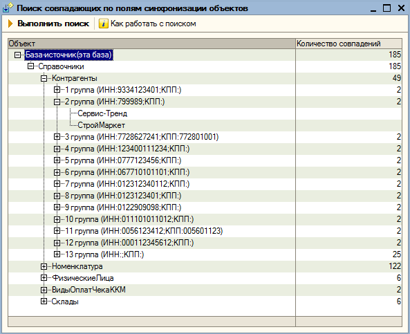

Поиск совпадающих по полям синхронизации объектов - механизм, позволяющий выявить объекты, совпадающие по полям поиска.
Пример: в информационной базе есть два элемента справочника "Контрагенты".
Первый элемент:
Наименование: ООО "Сервис-Тренд",
ИНН: 7999890,
КПП: не заполнено.
Второй элемент:
Наименование: ООО "СтройМаркет",
ИНН: 7999890,
КПП: не заполнено.
При настройке обмена с другой базой для справочника "Контрагенты" выбран вариант сопоставления "ИНН+КПП".
Обратите внимание, что первый и второй элементы(ООО "Сервис-Тренд") и ООО "СтройМаркет" имеют одинаковые ИНН и одинаковые КПП(значения КПП не заполнены).
Что происходит при обмене данными:
Механизм обмена данными при создании первого элемента в базе-приемнике ищет, есть ли базе элементы с такими ИНН и КПП и не находит.
В базе-приемнике создается новый элемент справочника "Контрагенты" (ООО "Сервис-Тренд").
При загрузке второго элемента механизм обмена данными снова ищет в базе-приемнике элементы справочника "Контрагенты" по ИНН и КПП второго элемента. И находит первый элемент. Далее в базе-приемнике происходит замещение всех реквизитов первого элемента на реквизиты второго элемента. То есть из базы "пропадает" первый элемент (ООО "Сервис-Тренд"), а вместо него появляется второй элемент(ООО "СтройМаркет"). Как избежать подобных ситуаций?
Для этого и создан механизм поиска совпадающих по полям синхронизации объектов.
В нашем примере полями синхронизации будут ИНН и КПП, а объектами - элементы справочника "Контрагенты".
При настройке обмена данными теперь можно проанализоровать справочники в информационной базе, выявить такие ситуации и устранить их.

На рисунке видно, что все найденные объекты сгруппированы по :
Виду справочника и группам. Группой является комбинация реквизитов, по которой найдены совпадающие объекты.
Видно, что и первый и второй элемент из примера попали во вторую группу : у них совпадает ИНН и не заполнено КПП.
При работе с поиском можно открыть либо форму найденного элемента, либо(если это элемент из другой базы) - просмотреть список реквизитов элемента.
Поиск не сопоставляет объекты различных информационных баз, все сравнения происходят в одной информационной базе.
Важно: Поиск применяется только при настройке обмена данными. После настройки обмена использование поиска не имеет смысла, поскольку при настроенном обмене данными большинство объектов(справочников, документов) сопоставляется по уникальным идентификаторам.
Важно: Поиск при настройке обмена через COM-соединение работает в двух информационных базах.